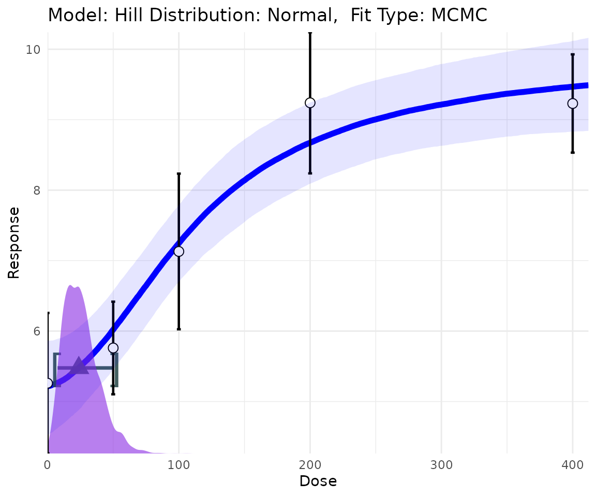
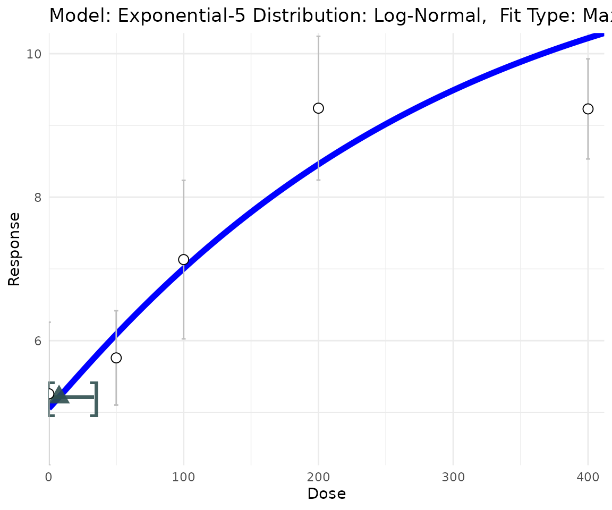
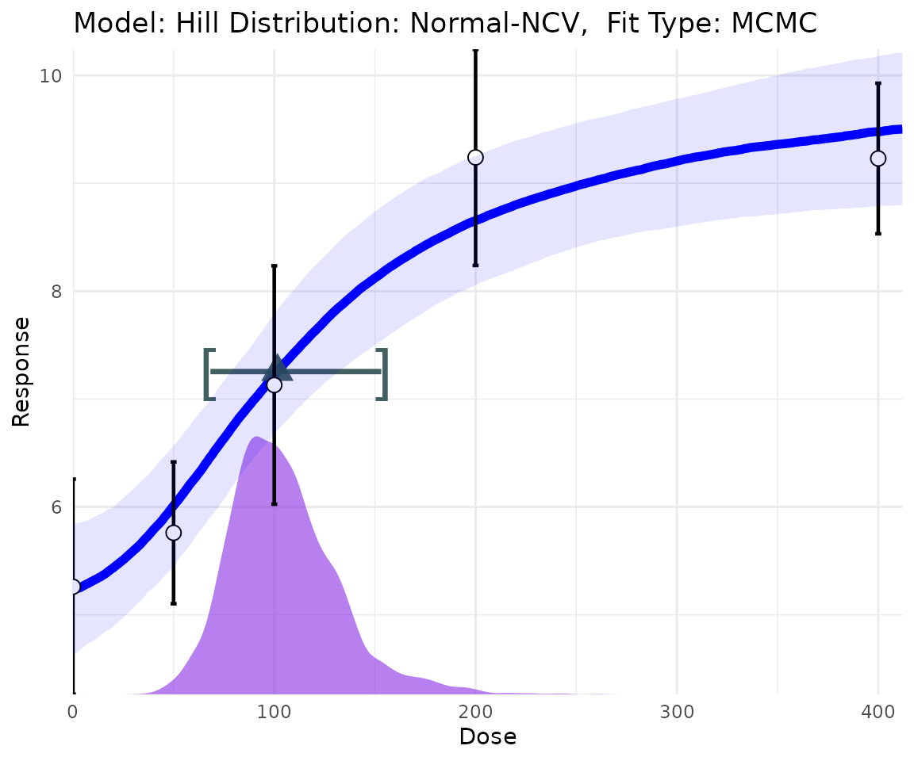
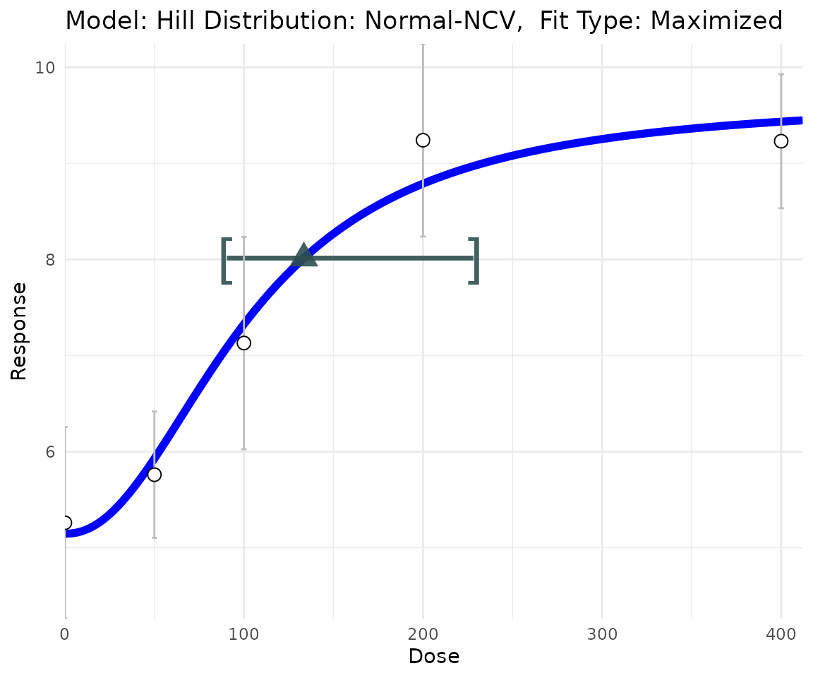
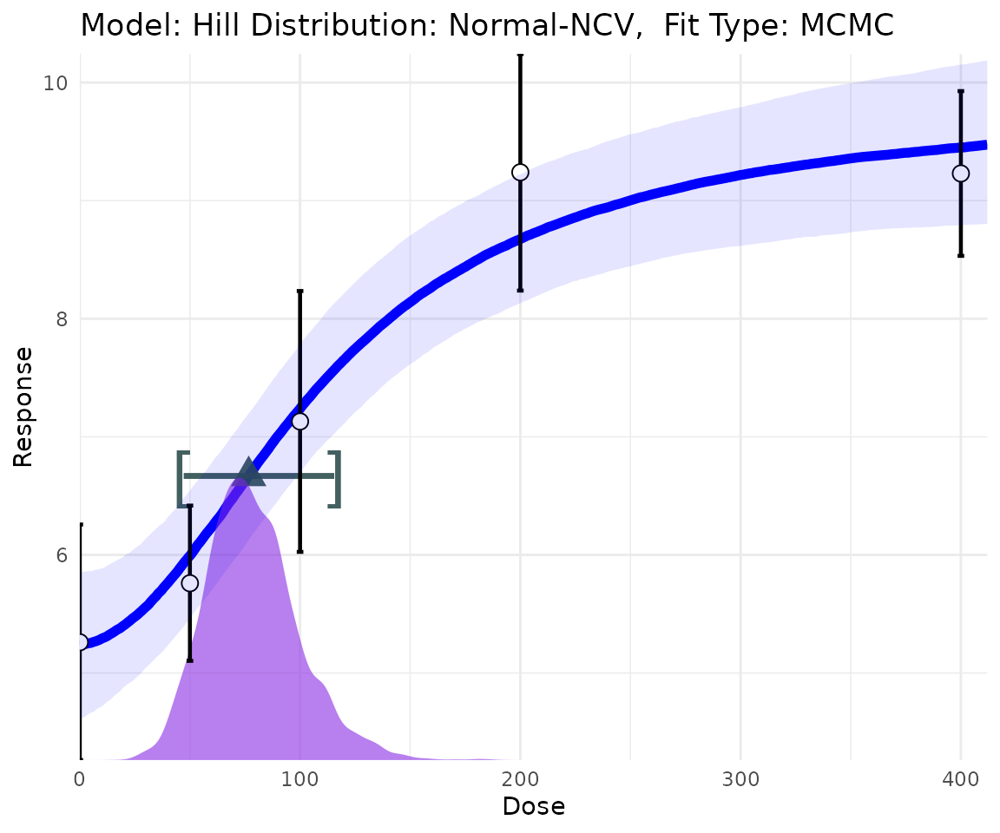
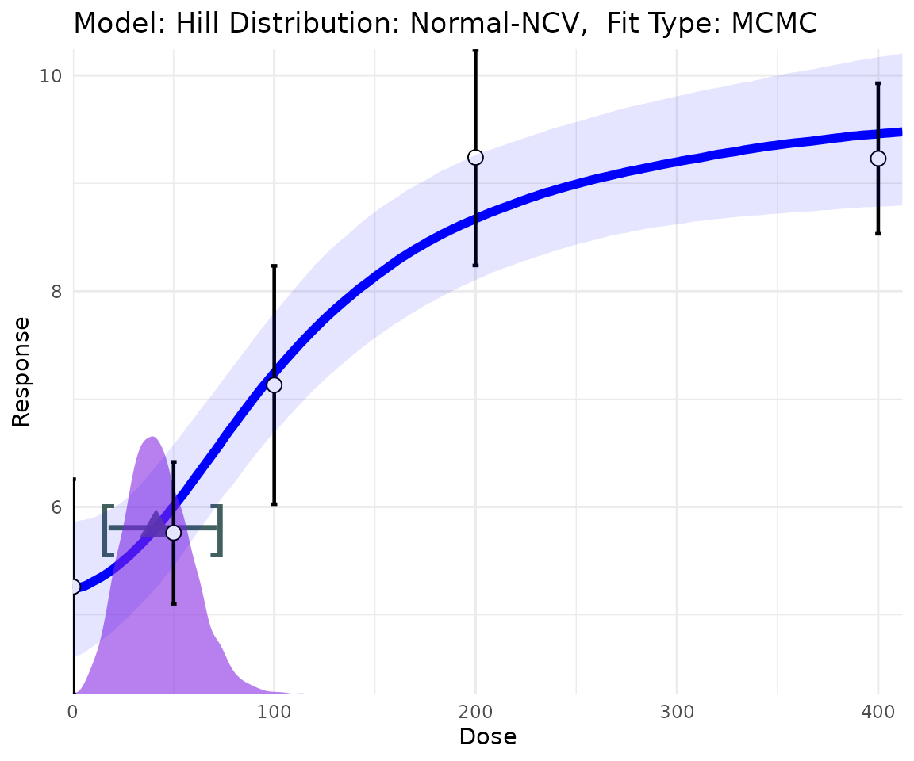
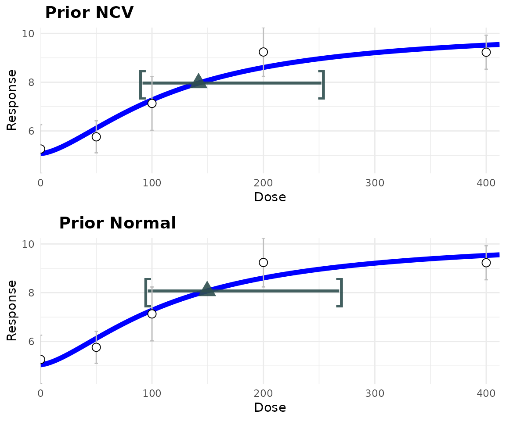
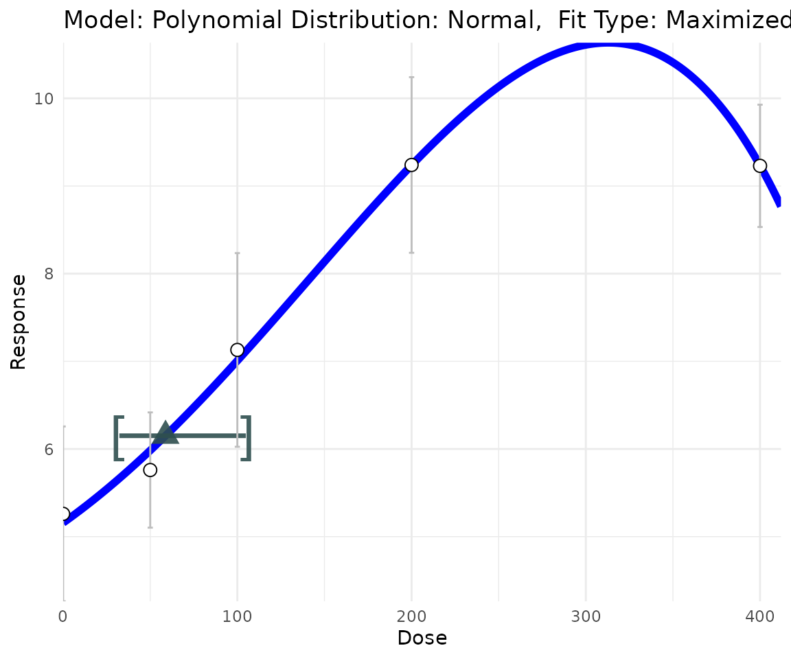
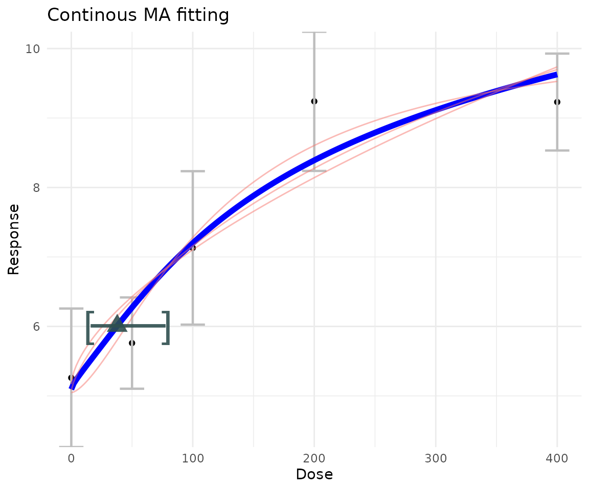

vignettes/Continuous.Rmd
Continuous.RmdThis file shows ToxicR for dichotomous benchmark dose analyses using both single model and multiple model fits. The first thing we need to do is load the data. From an excel file this can be done using the following R commands:
cont_data <- matrix(0,nrow=5,ncol=4)
colnames(cont_data) <- c("Dose","Mean","N","SD")
cont_data[,1] <- c(0,50,100,200,400)
cont_data[,2] <- c(5.26,5.76,7.13,9.24,9.23)
cont_data[,3] <- c(20,20,20,20,20)
cont_data[,4]<- c(2.23,1.47,2.47,2.24,1.56)
Y <- cont_data[,2:4]In what follows, I describe fitting the models using summary statistics. One can also fit these models using the original data with no change to the function call except the Y is a \(n\times 1\) now one column vector, and the dose vector is also \(n\times 1\) and corresponds to each entry in the data vector.
When summary data are used, ToxicR expects \(Y\) to be a \(n\times 3\) matrix. The first column of \(Y\) is the the mean, the second colunn is the number of units on test, and the third column is the observed standard deviation. In what follows, lets look at the Hill model fit, where the Hill model is \[\begin{align} f(dose) &= a + \frac{b\times dose}{c^d + [dose]^d} \end{align}\]
library(ToxicR)
#>
#>
#> _______ _____
#> |__ __| 🤓 | __ \
#> | | _____ ___ ___| |__) |
#> | |/ _ \ \/ / |/ __| _ /
#> | | (_) > <| | (__| | \ \
#> |_|\___/_/\_\_|\___|_| \_\
#> 22.8.1.0.4
#> ___
#> | |
#> / \ ____()()
#> /☠☠☠\ / xx
#> (_____) `~~~~~\_;m__m.__>o
#>
#>
#> THE SOFTWARE IS PROVIDED AS IS, WITHOUT WARRANTY OF ANY KIND, EXPRESS OR IMPLIED,
#> INCLUDING BUT NOT LIMITED TO THE WARRANTIES OF MERCHANTABILITY, FITNESS FOR A
#> PARTICULAR PURPOSE AND NONINFRINGEMENT. IN NO EVENT SHALL THE AUTHORS OR COPYRIGHT
#> HOLDERS BE LIABLE FOR ANY CLAIM, DAMAGES OR OTHER LIABILITY, WHETHER IN AN ACTION OF
#> CONTRACT, TORT OR OTHERWISE, ARISING FROM, OUT OF OR IN CONNECTION WITH THE SOFTWARE
#> OR THE USE OR OTHER DEALINGS IN THE SOFTWARE.
library(ggplot2)
hill_fit <- single_continuous_fit(cont_data[,"Dose"],Y,
model_type="hill")The last line fits the Hill Bayesian Laplace model and puts all of the information one needs in the `hill_fit’ object variable. This variable has the same structure as its dichotomous counterpart. By default the procedure assumes normal variance proportional to the mean. To see what model you fit, simply type the following line:
hill_fit$full_model
#> [1] "Model: Hill Distribution: Normal-NCV"
hill_fit$prior
#> $priors
#> [,1] [,2] [,3] [,4] [,5]
#> [1,] 1 1.0000000 1.0000000 -100 100
#> [2,] 1 0.0000000 1.0000000 -100 100
#> [3,] 2 0.0000000 2.0000000 0 100
#> [4,] 2 0.4700036 0.4214036 0 18
#> [5,] 2 0.0000000 1.0000000 0 100
#> [6,] 1 0.8349247 1.0000000 -18 18
#>
#> $model
#> [1] "Hill Model [normal-ncv]"
#>
#> $parameters
#> [1] "a" "b" "c" "d" "rho"
#> [6] "log(sigma^2)"
#>
#> $mean
#> [1] "hill"
#>
#> attr(,"class")
#> [1] "BMD_Bayes_continuous_model"Here, we see the Hill model is fit using the Normal-NCV, or normal variance proportional to the mean. For the Hill model, you can also use ‘normal’ as a distribution option.
hill_fit <- single_continuous_fit(cont_data[,"Dose"],
cbind(cont_data[,"Mean"],cont_data[,"N"],cont_data[,"SD"]),
model_type="hill",distribution = "normal",
fit_type = "mcmc")
hill_fit$full_model
#> [1] "Model: Hill Distribution: Normal"
plot(hill_fit)
Notice how the `distribution’ option controls the distribution. For the “hill”, “power”, and “polynomial” DR models you can choose either “normal” or “normal-ncv.” or the “exp-3” and “exp-5” models you can also choose “lognormal.”
exp5_fit <- single_continuous_fit(cont_data[,"Dose"],Y,
model_type="exp-5",distribution = "lognormal",fit_type="laplace")
exp5_fit$full_model
#> [1] "Model: Exponential-5 Distribution: Log-Normal"
plot(exp5_fit)
There are also other types of BMDs you can choose. Here one can specify absolute deviation as ‘abs,’ which solves \[\begin{align} \mid f(\mbox{BMD}) - f(0) \mid = \mbox{BMR}, \end{align}\] where \(BMR\) is a specific cutoff value. In the example below, the abosolute difference of \(\mbox{BMR} = 2.\)
hill_sd_fit <- single_continuous_fit(cont_data[,"Dose"],Y,
model_type="hill",distribution = "normal-ncv", fit_type="mcmc",
BMD_TYPE="abs",BMR = 2)
hill_sd_fit$full_model
#> [1] "Model: Hill Distribution: Normal-NCV"
plot(hill_sd_fit)
The standard deviation approach is the default approach, and this is the value that solves \[\begin{align} \mid f(\mbox{BMD}) - f(0) \mid = \mbox{BMR} \sigma_0, \end{align}\] and in this definition the \(BMR \geq 0\) is the number of standard deviations the mean changes from no-exposure. In the example below, the \(\mbox{BMR} = 1.5.\)
hill_sd_fit <- single_continuous_fit(cont_data[,"Dose"],
cbind(cont_data[,"Mean"],cont_data[,"N"],cont_data[,"SD"]),
model_type="hill",distribution = "normal-ncv",fit_type="laplace",
BMD_TYPE="sd",BMR = 1.5)
hill_sd_fit$full_model
#> [1] "Model: Hill Distribution: Normal-NCV"
plot(hill_sd_fit)
The hybrid approach is a probabilistic approach that mimics risk for dichotomous data. Here, the BMD is the value that solves \[\begin{align} \frac{ Pr[y < Y_0 \mid \mbox{BMD}] - Pr[y > Y_0 \mid 0]}{1-Pr[y > Y_0 \mid 0]} = \mbox{BMR} . \end{align}\] Here, \(Pr[y > Y_0 \mid 0]\) is the probability that an ‘adverse’ response is observed at background dose, and \(0 < \mbox{BMR} < 1\) is the increase in probability of seeing an adverse response at dose \(\mbox{BMD}\). For this approach \(Pr[y < Y_0 \mid 0]\) must be specified using the “point_p” option. This option is only used when “hybrid” is specified. The following shows a Hill fit, where the BMD with only a \(2.5\%\) chance of being observed at no dose, but has a \(12.25\%\) probability of being observed at dose \(\mbox{BMD}.\) Note: \(\frac{0.1225 - 0.025}{0.975} = 0.1.\) For more information on this approach see Crump [@crump1995calculation].
hill_hybrid_fit <- single_continuous_fit(cont_data[,"Dose"],
cbind(cont_data[,"Mean"],cont_data[,"N"],cont_data[,"SD"]),
model_type="hill",distribution = "normal-ncv",fit_type="mcmc",
BMD_TYPE="hybrid",point_p = 0.025,BMR = 0.1)
hill_hybrid_fit$full_model
#> [1] "Model: Hill Distribution: Normal-NCV"
plot(hill_hybrid_fit)
The relatived deviation approach [@slob2002dose] is the value that solves \[\begin{align} \mid f(\mbox{BMD}) - f(0) \mid = [1 + \mbox{BMR}] \times f(0), \end{align}\]
where \(\mbox{BMR} > 0\) is the value of increase/decrease from the background.
hill_rd_fit <- single_continuous_fit(cont_data[,"Dose"],
cbind(cont_data[,"Mean"],cont_data[,"N"],cont_data[,"SD"]),
model_type="hill",distribution = "normal-ncv", fit_type="mcmc",
BMD_TYPE="rel",BMR = 0.1,samples = 50000)
hill_rd_fit$full_model
#> [1] "Model: Hill Distribution: Normal-NCV"
plot(hill_rd_fit) Note: The above definitions are for for increasing data, `ToxicR’ will determine the direction of adversity and adjust computations accordingly.
Like the dichotomous case you can modify the priors, to see what prior you want to modify Again, this is easy we can type the following code to see what our current prior is:
hill_sd_fit$prior
#> $priors
#> [,1] [,2] [,3] [,4] [,5]
#> [1,] 1 1.0000000 1.0000000 -100 100
#> [2,] 1 0.0000000 1.0000000 -100 100
#> [3,] 2 0.0000000 2.0000000 0 100
#> [4,] 2 0.4700036 0.4214036 0 18
#> [5,] 2 0.0000000 1.0000000 0 100
#> [6,] 1 0.8349247 1.0000000 -18 18
#>
#> $model
#> [1] "Hill Model [normal-ncv]"
#>
#> $parameters
#> [1] "a" "b" "c" "d" "rho"
#> [6] "log(sigma^2)"
#>
#> $mean
#> [1] "hill"
#>
#> attr(,"class")
#> [1] "BMD_Bayes_continuous_model"
prior <- create_prior_list(normprior(0,1,-100,100),
normprior(0,1,-1e4,1e4),
lnormprior(0,1, 0, 100),
lnormprior(log(1),0.4215,0,18),
lnormprior(0,1,0,100),
normprior(0, 10,-100,100));
p_hill_ncv = create_continuous_prior(prior,"hill","normal-ncv")
prior <- create_prior_list(normprior(0,1,-100,100),
normprior(0,1,-1e4,1e4),
lnormprior(0,1, 0, 100),
lnormprior(log(1),0.4215,0,18),
normprior(0, 10,-100,100));
p_hill_norm = create_continuous_prior(prior,"hill","normal")When specifying a prior, it is slightly different than the
dichotomous case. Here, we need to specify what distribution we are
using too. This adds one or two parameters depending on the parameters.
All models have a parameter called \(\log(\sigma^2),\) which is the variance
term, and it is ALWAYS the last parameter in the model, and the
prior is placed over the log of this value. For the ‘normal-NCV’ option,
the variance is \(\sigma^2
f(dose)^\rho,\) i.e., it has an additional parameter \(\rho.\) The parameter \(\rho\) must have a prior, which is \(\mbox{log-Normal}(0,1)\) in the above
code.
hill_sd_a_fit <- single_continuous_fit(cont_data[,"Dose"],
cbind(cont_data[,"Mean"],cont_data[,"N"],cont_data[,"SD"]),
prior=p_hill_ncv,
fit_type="laplace",
BMD_TYPE="sd",BMR = 1.5)
hill_sd_b_fit <- single_continuous_fit(cont_data[,"Dose"],
cbind(cont_data[,"Mean"],cont_data[,"N"],cont_data[,"SD"]),
prior=p_hill_norm,
fit_type="laplace",
BMD_TYPE="sd",BMR = 1.5)
library(ggpubr)
figure <- ggarrange(plot(hill_sd_a_fit)+ggtitle(""),
plot(hill_sd_b_fit)+ggtitle(""),
labels = c("Prior NCV", "Prior Normal"),
ncol = 1, nrow = 2)
figure
In the above code, we didn’t need to specify the ‘model_type’ or ‘distribution’ because this is done implicitly when you specify the prior. The above code works for the hill model, lets try it for a polynomial model.
poly_sd <- single_continuous_fit(cont_data[,"Dose"],Y,
distribution="normal",model_type="polynomial",
degree = 4,
fit_type="laplace",
BMD_TYPE="sd",BMR = 0.5)
#> WARNING: Polynomial models may provide unstable estimates because of possible non-monotone behavior.
plot(poly_sd)
prior <- create_prior_list(normprior(0,1,-100,100),
normprior(0,1,-1e4,1e4),
lnormprior(0,1, 0, 100),
lnormprior(log(1),0.4215,0,18),
lnormprior(0,1,0,100),
normprior(0, 10,-100,100));
p_hill_ncv = create_continuous_prior(prior,"hill","normal-ncv")
prior <- create_prior_list(normprior(0,1,-100,100),
normprior(0,1,-1e4,1e4),
lnormprior(0,1, 0, 100),
lnormprior(log(1),0.4215,0,18),
normprior(0, 10,-100,100));
p_hill_norm = create_continuous_prior(prior,"hill","normal")
prior <- create_prior_list(normprior(0,1,-100,100),
normprior(0,1,-1e4,1e4),
lnormprior(0,1, 0, 100),
lnormprior(log(1),0.4215,0,18),
normprior(0, 10,-100,100));
p_exp5_norm = create_continuous_prior(prior,"exp-5","normal")
prior <- create_prior_list(normprior(0,1,-100,100),
normprior(0,1,-1e4,1e4),
lnormprior(log(1),0.4215,0,18),
normprior(0, 10,-100,100));
p_power_norm = create_continuous_prior(prior,"power","normal")
prior <- create_prior_list(normprior(0,1,-100,100),
normprior(0,1,-1e4,1e4),
lnormprior(log(1),0.4215,0,18),
normprior(0, 10,-100,100));
p_exp3_norm = create_continuous_prior(prior,"exp-3","normal")
#> NOTE: Parameter 'c' added to prior list. It is not used in the analysis.
prior_list = list(p_exp3_norm,p_hill_norm,p_exp5_norm,p_power_norm)With a list of priors one can then run a model average based upon a user specified model space. Here, all of the same benchmark dose options of ‘single_continuous_fit’ apply.
ma_sd_mcmc_2 <- ma_continuous_fit(cont_data[,"Dose"],Y, fit_type= "laplace",
BMD_TYPE="sd",BMR = 0.5,samples = 50000,model_list=prior_list)
plot(ma_sd_mcmc_2)
#> Scale for 'x' is already present. Adding another scale for 'x', which will
#> replace the existing scale.